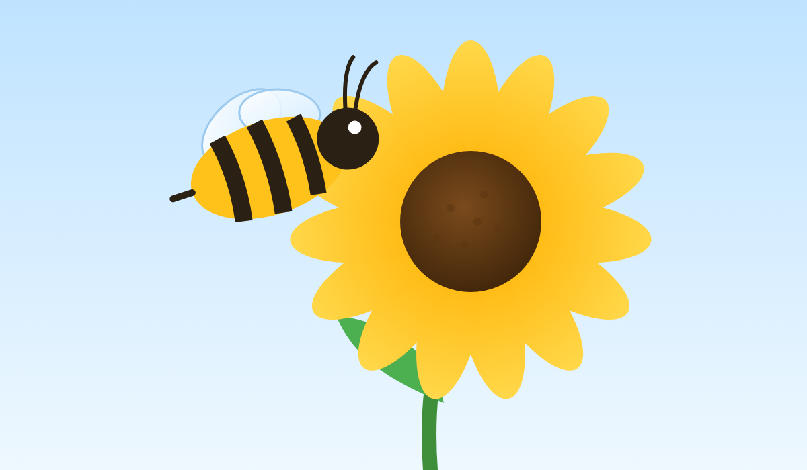

Nature
The secret language of bees
How a figure-eight dance tells a whole hive where the best flowers are.

Honeybees tell their nestmates where to find food with a figure-eight movement called the waggle dance. The angle of the straight run, measured against vertical, shows the direction of the food relative to the sun, and the length of the run shows how far away it is.
The Austrian scientist Karl von Frisch decoded the dance in the 1940s by moving feeding stations step by step and watching how the dances changed. His work on bee communication earned him a share of the 1973 Nobel Prize in Physiology or Medicine.
Bees judge distance by optic flow, the amount of landscape that slides past their eyes. In tunnels lined with stripes they overestimate how far they have flown, and their dances report the longer flight. Recruits still find the flowers, because they see the same landscape on the way.
Richer flower patches earn more enthusiastic dances, repeated more often, so more foragers are recruited to the best sources. In this way a colony of tens of thousands spreads its workforce across the landscape without any bee seeing the whole picture.
Researchers once doubted that recruits really used the dance. Radar tracking in the 2000s settled it: newly recruited bees flew straight out in the direction the dance pointed, then searched around the place it described.